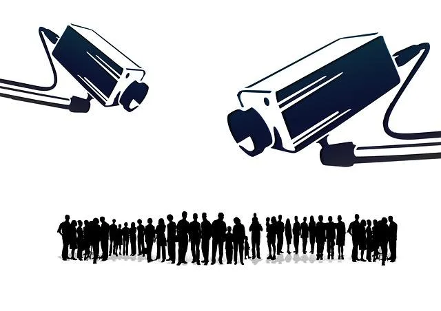

We believe security software like Whonix needs to remain Open Source and independent. Would you help sustain and grow the project? Learn more about our 11 year success story and maybe DONATE!

Surveillance Capabilities, Technological Capabilities of Adversaries for Surveillance.
Introduction
The advanced and pervasive state of modern surveillance should never be underestimated: [1]
Their recent evolution has been not incremental, but abrupt. The crucial advance of modern surveillance has been the development of inexpensive automation. Where before the government had to rely on human agents or informants to spy, today it spies through a proliferating network of unsleeping sensors. And where before agents had to manually review what they collected, today they use computers to make sense of their harvest. The government's appetite for digitally collected data has grown in conjunction with its capabilities for collection and analysis. And, when law enforcement agencies cannot sate that appetite directly, they feast, instead, on data accumulated by private companies.
The result of these advances is that, for the first time in human history, the government can now engage in nearly pervasive surveillance of the public. We have seen a glimpse of that reality already, through Edward Snowden's disclosures to the press of the breathtaking scope of surveillance by the National Security Agency and recent reports on law enforcement's expanding use of new and invasive technologies like cell-site simulators, automated license plate readers, pervasive aerial surveillance systems, and facial-recognition databases.
The trend in technology is to reduce virtually everything we do to digital data. Our cellphones are livestreams of our locations; our internet-usage histories are unintended journals of our thoughts; our e-mails are often-permanent records of once-ephemeral conversations. Newer technologies digitize even more of our lives: smart watches, smart TVs, smart refrigerators, smart cars, and a host of other internet-connected devices have made The Wizard of Oz's technicolor transition seem impossibly quaint.
To determine the proper anonymity techniques to adopt, the user must estimate the technological capabilities of surveillance adversaries such as corporations, criminals and repressive government. This is bound to be difficult if signal intelligence is a foreign concept or the user does not have a technical or scientific background. Nevertheless, the proven capabilities of adversaries is worth summarizing, in order to help users distinguish facts from fantasy.
Passive Surveillance
Introduction
Extensive passive surveillance is already performed around the clock, particularly in the 5 Eyes jurisdictions and allied countries, repressive regimes like China and Russia, and various other places around the world.
Based on Snowden's intelligence disclosures it is likely that all harvested data is retained indefinitely, despite the vast majority of the population not being suspected of wrongdoing. Furthermore, surveillance methods are:
- Assisted by corporate collusion and/or via surreptitious access to enormous datasets on individuals.
- Increasingly automated.
- Super-powered by virtually limitless resources.
- Immediately deployed once any new tool or suite becomes fully functional.
Internet Backbone Surveillance
Recent disclosures reveal the extent of the decades-long working relationship between major US Internet infrastructure providers -- like AT&T -- and the IC: [2]
Atlanta, Chicago, Dallas, Los Angeles, New York City, San Francisco, Seattle, and Washington, D.C. In each of these cities, The Intercept has identified an AT&T facility containing networking equipment that transports large quantities of internet traffic across the United States and the world. A body of evidence including classified NSA documents, public records, and interviews with several former AT&T employees indicates that the buildings are central to an NSA spying initiative that has for years monitored billions of emails, phone calls, and online chats passing across U.S. territory.
Since the FAIRVIEW program was established in 1985, AT&T [3] has been assisting the IC with its massive infrastructure to tap huge data flows that pass through critical facilities. For instance, the SAGUARO initiative has helped the IC to categorize data collection based on its potential intelligence value. [4] In effect, AT&T currently forms a critical component of the IC's powerful and widespread electronic eavesdropping capability, exposing the powerful collusion that already exists between formerly trusted providers and government. [5]
Notably, it is often cheaper for network operators to use the excess capacity of other providers to transport customer data. This means that extra-legal activities have collected an enormous amount of domestic and foreign Internet traffic at these peering sites, like that of Sweden's Telia, India's Tata Communications, Italy's Telecom Italia and Germany's Deutsche Telekom. [4]
With the advancement of mass surveillance methods, data collection has dramatically increased in scope and sophistication. For example, the NY times reported that in 2003 that the successor to the FAIRVIEW program had collected 400 billion Internet records in only a few months. [6] Nearly 100 percent of global Internet traffic passes through fiber optic cables which are routed through key US infrastructure points, leading the IC to seize a "home field advantage". This is a logical blueprint for perfecting mass surveillance, since nearly 200 petabytes of data passes through AT&T's networks daily. [7] [8]
Targeted Surveillance
In simple terms, a highly capable adversary [9] with significant technological resources and expertise can:
- Intercept a user's Internet traffic, including e-mail, instant messaging, VoIP and Wi-Fi connections. [10]
- Intercept a user's phone and fax communications, including landlines, cell phones, satellite phones and radio telephone extensions. [11]
- Associate a user's geographical location with IMEI (cell phone) or SIM card identifiers.
- Reliably associate a user's calls with stored voiceprints (speaker recognition). [12]
- Associate a user's geographical location with records of digital financial transactions.
- Create web domains (fake URLs) masquerading as sites related to human rights, news media, advocacy, health organizations etc. to launch spyware that hacks certain targets. [13] [14]
In addition, hundreds of implants are available to penetrate all types of OSes, firewalls, routers, VPN traffic, computers, smartphones and other digital devices. These implants are capable of performing almost any surveillance function and surviving across reboots, software / firmware upgrades, and following the re-installation of operating systems.
Adversary Limitations
Adversaries are not omnipotent; human resources are a definite limiting factor in the scope of both targeted and passive surveillance. At the time of writing, adversaries cannot:
- Break modern or quantum-resistant encryption protocols. [15]
- Perform active surveillance on a large number of non-suspects, such as launching widespread exploits against individual computers -- the chances of being caught are too high.
- Task officers or employees with directly reading or listening to a large amount of communication. [16]
- Recognize individual faces from a satellite -- although extensive CCTV and public camera networks are effective in tracking individuals in public places. [17]
- Depend on a near-limitless stream of qualified human resources.
See Also
To learn more about passive and targeted surveillance and the host of programs already in use, refer to this entry and the Lawfareblog summary of Snowden revelations. To learn more about the long history of IC surveillance abuses targeting various law-abiding groups and communities, see here.
Footnotes
- https://www.yalelawjournal.org/forum/why-rely-on-the-fourth-amendment-to-do-the-work-of-the-first
- https://theintercept.com/2018/06/25/att-internet-nsa-spy-hubs/
- And likely other IT behemoths.
- https://www.wsws.org/en/articles/2018/06/29/nsat-j29.html
- This contention is further supported by AT&T unnecessarily changing network routing of the Internet backbone through suspected spy hubs.
- https://www.nytimes.com/2015/08/16/us/politics/att-helped-nsa-spy-on-an-array-of-internet-traffic.html
- Fulfilling the stated aims of "Collect It All ... Exploit It All."
- The aggressive extent of warrant-less, upstream spying activity suggests only world-class anonymity and encryption tools can reassert digital privacy rights. Promises to rein in abuses and "privacy on paper" -- the Bill of Rights and similar texts -- have proven to be meaningless "policy measures".
- Such as a military counter-intelligence unit.
- Wi-Fi connections are vulnerable, even though they do not directly involve ISPs.
- Radio telephone extensions do not use telecommunications providers ("telcos").
- Some large corporations and government departments already offer confirmation of identity via this method.
- https://www.theguardian.com/technology/2021/jul/15/spyware-company-impersonates-activist-groups-black-lives-matter
- Disclosures reveal spyware has been targeted at politicians, human rights activists, journalists, academics, embassy workers, and political dissidents.
- Although Quantum Computers may soon tip the balance in favor of attackers.
- However, AI efforts in this field are currently focused on filtering huge streams of data for descriptors of interest. For example, see here.
- As are UAVs which can be used for facial recognition.
License
Liberte Linux Philosophy page Copyright (C) 2013 Maxim Kammerer
Whonix Surveillance_Capabilities wiki page Copyright (C) 2013 - 2025 ENCRYPTED SUPPORT LLC <adrelanos@whonix.org>
This program with ABSOLUTELY NO WARRANTY; for details see the wiki source code.
This is free software, and you are welcome to redistribute it
under certain conditions; see the wiki source code for details.
Categories: Documentation